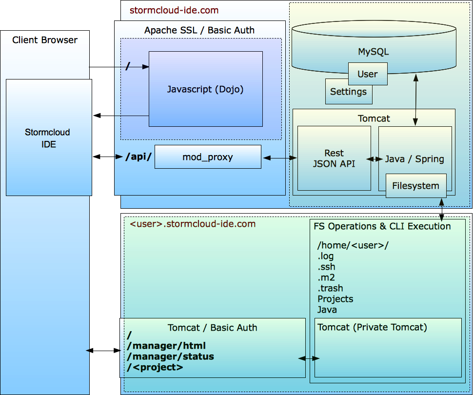
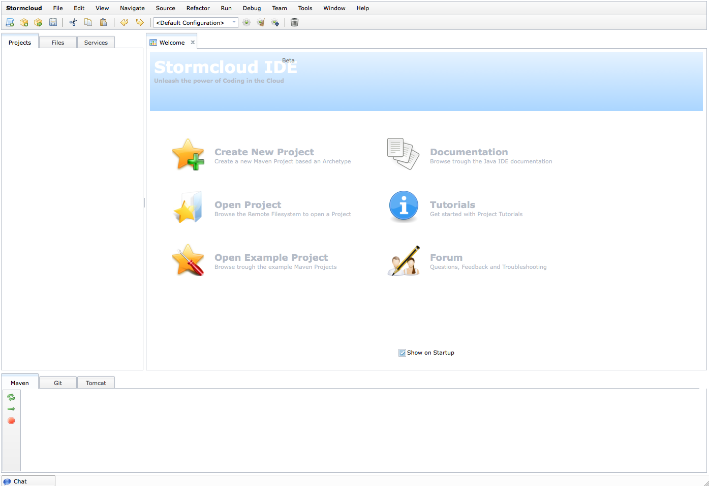
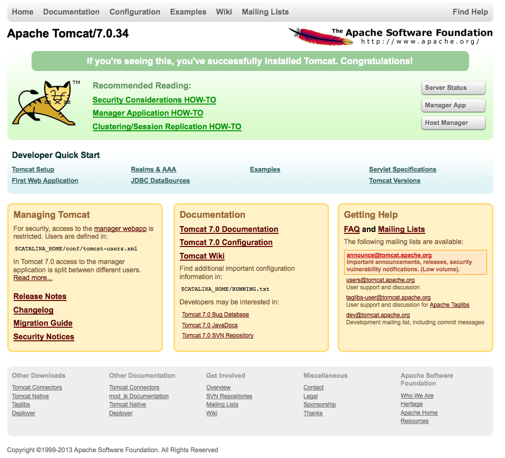

Coding in the Cloud
Developer setup manual
Introduction
This is an attempt to guide you (a developer) over the bumps of setting up your environment so you can run the Stormcloud IDE and join in the development. As it is a work in progress i ask you to bear with me and point out errors and/or shortcomings so at some point it will be an accurate and complete document.
First off start with forking the Project, GUI and API repositories and give them a star of course! ;)
At a glance
Before we start there are a few conceptual things you need to understand. Just to know where what goes.
The Stormcloud IDE consists of three parts, these are GUI, API and User Home. In the image below the GUI domain has the blue-ish/purple overlay, the API is yellow and the User home is green.
In theory the GUI, API and User home can all three be placed on different machines but when you develop for it they will all three live on one and the same machine, the one you will develop on.
This does give some-things-todo with respect to tomcat port numbers that will bump into each other, keep that in mind, it's included in the manual to change the port numbers of the User Home Tomcat instance if you run everything on one machine.
Of course you can choose to place it over multiple machines but that will complicate things for development and should only be done for deployments aimed at using the IDE, not develop for it.
Short description
The GUI is a pure html/javascript project and the idea behind it is to keep it a pure javascript client which makes http requests to the Stormcloud Rest API on the server. The GUI components are all created with the Dojo toolkit, these are called widgets. The stormcloud part is 'bootstrapped' from the js/stormcloud/stormcloud.js and it has been setup following the AMD mechanism.
The API project is a maven project serving the Rest API. The glue is Spring and there are a few modules glued together: core (containing model pojo's, entites, dao and things like that), Debug, Filesystem, Git, Java, Maven, Tomcat and Web (the war file). Quite straight forward each module contains the specific parts to realize functionality basically matching the module name.
The User Home is a layout of folders on the filesystem containing all the 'private parts' (ehm, well, you know what i mean ;)) like project, private JVM/Tomcat instance and some 'internals' folders.
Set it all up.
Now. For the work that needs to be done. Take your time to do this, do not rush it as you will definitely end up chasing your tail (depending on your experience on the matter) making you pull your hair out and ending up in the corner of the room with a tinfoil cap on your head thinking you are a banana. Not good (for most of us).
Let's get to it then.
Building the Super POM
We will start with the Project repository. This repository contains the super pom, you will need to build this one first otherwise the API project will not build.
So Fork the stormcloud/project repository, clone the Fork
to your local machine and run mvn clean install on it.
(i'm always including 'clean',. that's just me, you don't have to do that). This should set you up with the project super
pom in your maven repository.
Setting up the GUI
Fork the stormcloud/gui repository and clone the Fork to your local machine.
The Stormcloud IDE GUI is served trough apache, so you need to have an apache installation and a site-enabled which serves the contents of the gui repository you just cloned. The project as cloned is ready to exactly be copy pasted into a website root. What i do is create a symlink from the dir where i cloned the repository to the dir apache knows has to serve. That way you can edit/view and commit directly without hassle/moving things around, of course you can set it up anyway works best for you.
Make sure you have mod_proxy_http loaded as well (this will probably change to the ajp connector for reasons not discussed here as it's beyond the scope of this document).
When that is done the GUI should be correctly served from http://your-machine/
I have placed it in the apache root, you can also use a different folder if you have other sites running
locally (for example http://localhost/[your-site-folder]/), that's all up to you, how you like to work.
At this point you should be able to see the GUI as shown below when accessing http://localhost or whatever folder you placed the site in.
This is without projects, files, services in the left side explorer panes as the GUI cannot reach the Rest API (yet). The GUI components should all work though (menus, tabs..), meaning Dojo is correctly loaded.
The API (Rest Service)
Now for the next part. The Rest API is served from tomcat. (not the same one as the User Home is going to use!)
Make sure you have a correctly installed and working Tomcat (i use tomcat 7) which you can reach trough http://localhost:8080 where the Tomcat welcome page should show up.
The API spring configuration is using a properties file to find the MySQL database it needs to use (which you will be creating in the next part of this manual). I have placed a properties file in api/core/src/main/properties/stormcloud.properties. This file needs to be placed in [your-tomcat-home]/lib/properties (create the properties dir). Change the username and password into anything you see fit as long as it can access the database schema you are about to create.
As said, the IDE also uses a MySQL database for user settings etc, so make sure you have mysql installed. I have added a MySQL dump of the stormcloud schema in api/core/src/main/database/stormcloud.dump, run it on your MySQL instance to create the database and make sure the user in the properties file is the one that can access this schema.
User Home (Filesystem)
We are now going to create the User Home where the user 'private parts' will be living. Create the following folder structure in a directory of your choice (i have it in /filesystem/martijn) but you can really place it anywhere. So create these folders in there:
.log
.m2
.trash
java
projects
tomcat
Make sure these folder are writable to the user which runs tomcat, place them in the same group or something like that. I just run tomcat as the same user as the folder owner, but that can be done much better from a linux admin perspective ;) Not important at the moment...
You might want to place some example maven projects in the [user-home]/projects folder so you have actually a project to look at later on.
Also place a tomcat installation in the [user-home]/tomcat dir and create a symlink to it called 'latest'. This is for easy tomcat upgrading later on, or maybe even have a user choose which tomcat version he wants to run. So you would end up with [user-home]/tomcat/latest being the tomcat root or tomcat home if you like. You can also just make it a folder called 'latest' does not really matter for now. What does matter is that you change the port of this tomcat installation to be different from the tomcat you are already running. I changed this in the [tomcat-home]/conf/server.xml:
<Server port="8005" shutdown="SHUTDOWN">
into:
<Server port="8105" shutdown="SHUTDOWN">
and
<Connector port="8080" protocol="HTTP/1.1" connectionTimeout="20000" redirectPort="8443" />
into:
<Connector port="8180" protocol="HTTP/1.1" connectionTimeout="20000" redirectPort="8443" />
The java folder stays empty for now, i'm still working around a few issues before the private VM can be run, so all is going to run on one JVM for now.
Once you have the folder structure setup as described you need to change some database values to resemble this:
In the user table change the user_name, password into anything you want to use, this is the user against which the API calls need to be authenticated. The email address, well, it doesn't do anything yet so, fill in whatever you want.
In the same table change the home_folder, project_folder, m2_folder to the respective filsystem paths where you placed these folders.
Now... if you brought it this far you are almost set to go BUT...
We need to tie things together between Apache and Tomcat and configure some things in the gui. In your apache configuration add these proxy rules:
ProxyRequests Off
ProxyPreserveHost On
<Proxy *>
Order allow,deny
Allow from all
</Proxy>
# Stormcloud Rest API
ProxyPass /stormcloud http://localhost:8080/stormcloud
ProxyPassReverse /stormcloud http://localhost:8080/stormcloud
# Stormcloud Chat (Comet)
ProxyPass /cometd http://localhost:8080/cometd-demo-2.5.0/cometd
ProxyPassReverse /cometd http://localhost:8080/cometd-demo-2.5.0/cometd
And now i see the second rule for cometd, yes that one needs to be deployed in tomcat as well... for now i have added the cometd-demo-2.5.0.war in api/core/src/main/cometd which you can directly deploy into tomcat. It's a demo war and basically a left over of the chat proof of concept i made so at some point a there has to be an 'own' cometd implementation.
Almost there, the gui needs to know a few things, this is mainly because it's a work in progress, anyway, here goes:
In the gui/js/stormcloud/_base/context.js you will have to change the values as shown below into values that comply with how you have your setup. I have added 127.0.0.1 stormcloud-ide.com in my /etc/hosts file. You can also just use localhost, whichever you prefer as long as these values are according to what you type in the browser to reach the GUI (this is a cross-domain/origin thing).
I also habe added 127.0.0.1 martijn.stormcloud-ide.com to the hosts file and pointed it in the context file to my 'private' tomcat installation in the user home.
host : 'stormcloud-ide.com',
tomcatViewUrl : 'martijn.stormcloud-ide.com:8180',
tomcatManagerUrl : 'martijn.stormcloud-ide.com/manager/text/',
Also change the value in the gui/js/stormcloud/_base/auth.js to read the user/pass you have in the database user table. mine reads:
return base64.encode('martijn:1');
that's what i have in the database user_name : martijn, password 1
If all is well (i'm not sure if i missed anything, but probably did) you can now start the tomcat instance with the API and cometd in it (let's call it the global tomcat) and when you serve the GUI now trough your browser it should show the maven project(s) you placed in the [user-home]/projects folder.
Pfew, i know it's a bit of bump but it's a one-time setup, once it works you can run and code!
Let me know when you have questions etc. You can also reach me on skype: mteigeler
Hope you get you head around it! Place any questions in the Stormcloud IDE Group so we can keep it central for anyone to read and know!